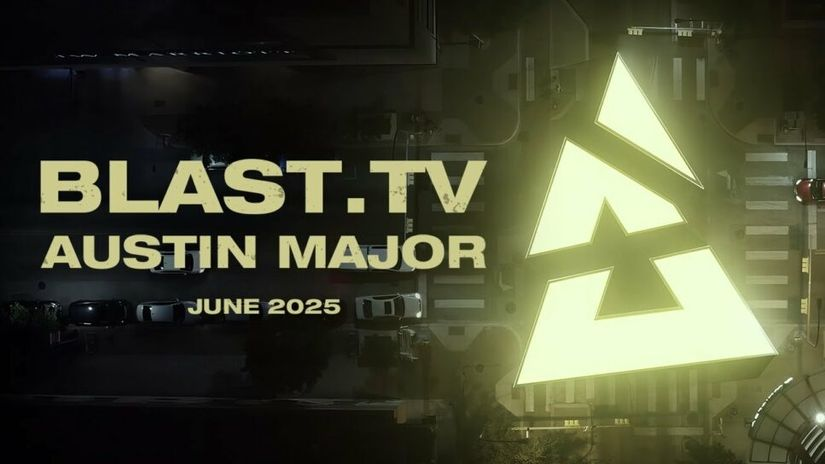

BLAST najavio Austin Major 2025
Biće to prvi turnir ovog tipa u Americi posle sedam godina
BLAST je zvanično predstavio prvi Major u 2025, ujedno i prvi Major u Americi nakon sedam godina. Iako je više različitih izvora uveliko potvrdilo glasine o pomenutom Majoru, sinoć smo dobili i zvaničnu potvrdu od organizatora.
Ovo će biti drugi Major koji će BLAST organizovati, nakon što su imali tu čast da isprate CS:GO Majore u istoriju organizovanjem BLAST Paris Majora na kom je Vitality podigao trofej pred domaćom publikom. Uz ESL trenutno najveći organizator CS takmičenja, BLAST je relativno kasno ušao u organizaciju Major turnira, ali nisu dugo čekali na priliku da se ponovo oprobaju sa elitnim takmičenjem.
Major u Teksasu će se održati u junu naredne godine i biće treći CS2 Major. Turnir će biti organizovan Moody Centar areni koja prima preko 15.000 gledalaca. Podsetimo, poslednji Major koji smo gledali u Americi je bio istorijski ELEAGUE Boston Major 2018 na kom je Cloud9 doneo prvi i jedini CS Major trofej NA reg
Iako je američka CS scena već dugo vremena u ogromnoj rezultatskoj krizi, Amerika je nedavno tokom IEM Dallas 2024 turnira dokazala da i dalje mogu da budu odličan domaćin takmičenjima i da se strast prema CS esportu na ovom kontinentu nije ugasila. Ostaje da vidimo da li će Major na domaćem terenu pokrenuti neke od neaktivnih američkih esport organizacija da se vrate u CS2 esport i možda baš oni postanu novi miljenici publike kao što je to uspeo Cloud9 pre sedam godina.